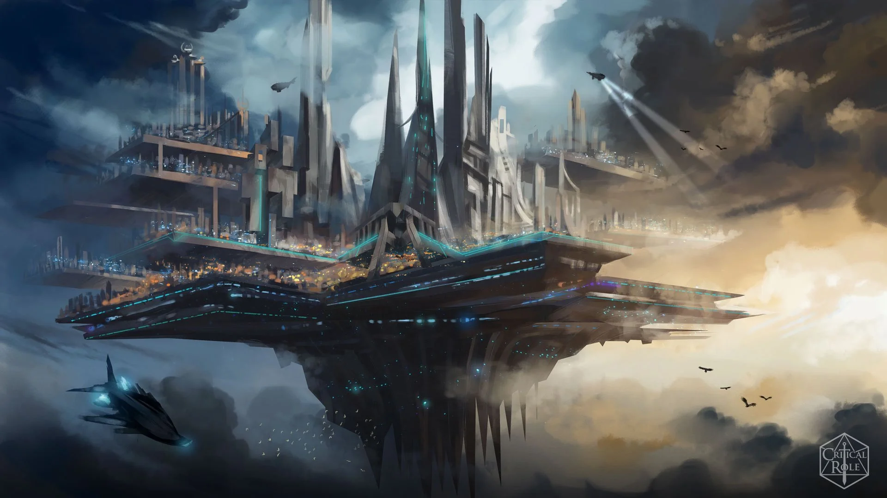
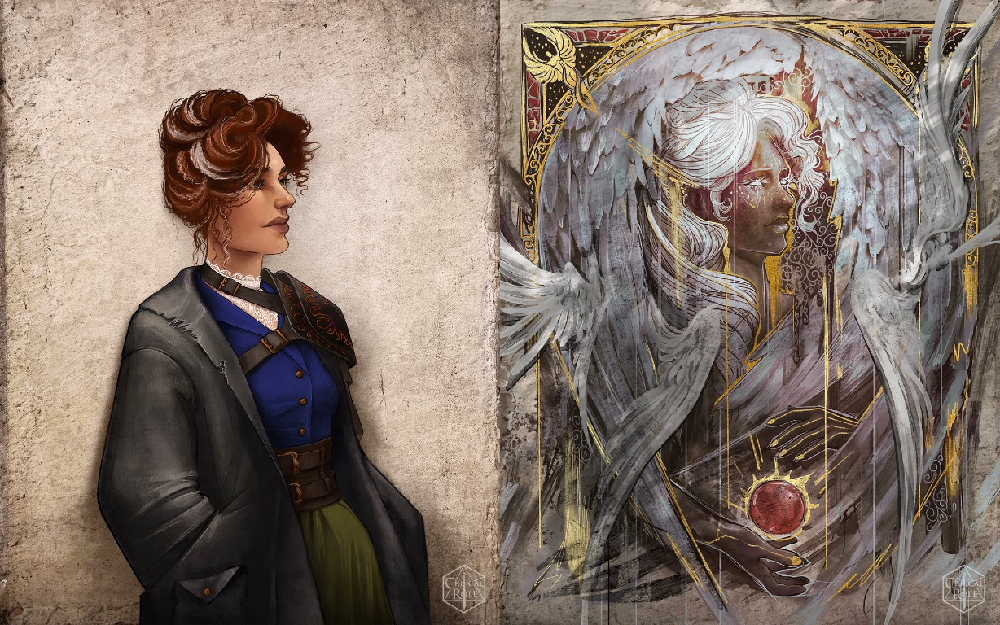

Exandria Unlimited: Downfall
 Art By: @EldritchBlep
In a realm beyond mortal comprehension, Tengar, the Eternal Palace, is facing a catastrophic event as a force of nothingness threatens to destroy everything. In a desperate attempt to escape, beings of light take on physical forms and flee across the stars. Their journey leads them to the world of Exandria, where the pantheon of gods is established.
During the Calamity, Aeor stands as a bastion of ancient magic amidst widespread devastation. As the gods vanish, a group of refugees, including Trist, Ayden, Emhira, and Asha, seek refuge in Aeor. They are led by S.I.L.A.H.A., an aeormaton sorcerer, and encounter various challenges, including a cruel captain and a dying elderly man. The group boards a skyship and arrives in Aeor, where they are introduced to their divine counterparts: Trist (the Everlight), Ayden (the Dawnfather), Emhira (the Matron of Ravens), Asha (the Wildmother), and S.I.L.A.H.A. (the Arch Heart). They are accompanied by The Emissary, a proxy of the Lawbearer.
Upon arriving in Aeor, they discover that the city is hiding a weapon capable of killing gods, known as the Factorum Malleus. The group learns that they must work with the Betrayer Gods to dismantle the weapon, which involves sabotaging multiple components: the Eravox Protocol, the Obtenebrator, and the Latimus Princeps. The group splits into teams to tackle these objectives, encountering celestial and demonic forces along the way.
In their quest, the group faces intense battles, discovers hidden truths, and makes significant sacrifices. The Emissary ultimately plays a pivotal role in destroying the Factorum Malleus, and the gods shed their mortal forms to reunite above the clouds. They reflect on the devastation caused, their lost children, and the future of Exandria. The Dawnfather, in particular, struggles with leaving his children behind but finds solace in his family’s unity and hope for the future.
The gods seal away the Betrayers and gaze upon the world they have altered, preparing to depart as they come to terms with their actions and their legacy.
The characters are:
Asha
of the Wildmother

Asha is a wolf who can transform into an elven monk and serves as the mortal avatar of Melora, the Wildmother. When the Exandrian pantheon decided to neutralize Aeor’s dangerous technology, Melora agreed to contribute by sending Asha to join the mission as her mortal representative.
Ayden
of the Dawnfather

Ayden is a human barbarian, druid, paladin, and cleric. He serves as the mortal avatar of Pelor, the Dawnfather. When the Exandrian pantheon decided to counter the threat posed by Aeor’s dangerous technology, Pelor, one of the last to agree, contributed by bringing Ayden into existence as a mortal human boy. Born a decade and a half before the mission, Ayden experienced a warrior’s upbringing, fostering a connection with nature and the stars. This journey led him to become a paladin. His path eventually crossed with Trist, a teacher and the mortal incarnation of the Everlight, inspiring Ayden to become a cleric of the goddess, who had very few followers left.
Emhira
of the Matron of Death

Emhira is a human warlock and the mortal avatar of the Raven Queen. When the Exandrian pantheon decided to counter Aeor’s dangerous technology, the Raven Queen contributed by bringing Emhira into existence less than three decades before the mission. Empowered by a pact made before her birth, Emhira was born as a mortal girl. Purvan Suul, the Raven Queen’s champion, came to her home, explaining to her parents that a vision had directed him to protect her. He stayed as her guardian for many years, during which Emhira grew up under his watchful eye. With his guidance, she eventually manifested her warlock powers and understood her purpose as the mortal incarnation of the goddess of death. Before heading to Aeor, Emhira sought out the possessions of the mortal woman who became the Raven Queen to equip herself properly.
S.I.L.A.H.A.
of the Arch Heart

S.I.L.A.H.A. is an Aeormaton sorcerer/warlock and the mortal avatar of Corellon, the Arch Heart. When the Exandrian pantheon decided to neutralize Aeor’s dangerous technology, Corellon contributed by taking a unique approach. Although Ioun was designated as the scout in Aeor, Corellon’s curiosity led them to manifest as S.I.L.A.H.A., an Aeormaton created by Primarch Selena Erenves, allowing them to bypass Aeor’s defenses against divinity.
For three decades, S.I.L.A.H.A. immersed himself in Aeorian culture, appreciating its beauty and rising socially to become a respected figure due to his creator’s high status. During this time, he met Arcadia Cerenvetorix, the mortal avatar of Ioun. S.I.L.A.H.A. also established a secret sanctuary called Ars Elysia, where he and others could revel in beauty and pleasure. Adopting the persona of “the Chosen One” within this hidden tavern, he grew stronger through the adoration of others, making Ars Elysia a sacred place for him, even though such activities contradicted the divine plan.
The
Emissary

The Emissary was an earth genasi barbarian and the herald of Erathis, the Lawbearer. When the Exandrian pantheon decided to neutralize Aeor’s dangerous technology, Erathis was meant to send a mortal incarnation of herself to assemble a team for the mission. Instead, she created the Emissary and placed him in a crate, which was received and protected by Asha.
Trist of the Everlight 
Trist is a human paladin/cleric and the mortal avatar of Sarenrae, the Everlight. When the Exandrian pantheon decided to neutralize Aeor’s dangerous technology, Sarenrae contributed by bringing Trist into existence less than four decades before the mission. Born as a mortal girl, Trist grew up to become a teacher. She met and married Amaris, a firbolg, with whom she had two children, Haylie and Topher.
The Cloaked Planetar ~ Episode 100
The Scribe’s Ruin ~ Episode 100
Encounter:
- 1 Aeorian Archmage
- 2 Constructs
# Round 1
add_damage('Emissary', 'Slashing', 35)
add_damage('Trist', 'Radiant', 36)
# Guiding Bolt
add_enemy_damage('Constuct', 'Bludgeoning', 44)
add_damage('Asha', 'Piercing', 12)
add_damage('Asha', 'Poison', 7)
add_damage('Asha', 'Bludgeoning', 26)
increment_kills('Asha')
# Aeorian Archmage
add_damage('Ayden', 'Radiant', 20)
# Guiding BoltThe Fall of the Factorum Malleus ~ Episode 101
Encounter:
- Acastriel
- Adamar
- Selena
- Ataro the Undead Dragon
- 5 Aeorian Archmages
- 4 Aeorian Mages
- 2 Irrevocable Automatons
- 1 Glabrezu
- 1 Nalfeshnee
- 1 Brass Dragon
- 1 Silver Dragon
# Round 1
add_damage('Emissary', 'Slashing', 36)
add_enemy_damage('Acastriel', 'Radiant', 28)
# Searing Burst
add_enemy_damage('Acastriel', 'Fire', 28)
# Searing Burst
update_damage_taken('SILAHA', 28)
update_damage_taken('Emissary', 14)
update_damage_taken('Ayden', 14)
add_enemy_damage('Irrevocable', 'Radiant', 91)
update_damage_taken('SILAHA', 45)
update_damage_taken('Emissary', 23)
update_damage_taken('Ayden', 23)
add_enemy_damage('Glabrezu', 'Bludgeoning', 15)
update_damage_taken('SILAHA', 7)
update_damage_taken('Emissary', 4)
update_damage_taken('Ayden', 4)
add_enemy_damage('Nalfeshnee', 'Piercing', 32)
update_damage_taken('Emissary', 16)
update_damage_taken('Ayden', 16)
add_enemy_damage('Brass Dragon', 'Fire', 91)
update_damage_taken('SILAHA', 45)
update_damage_taken('Emissary', 23)
update_damage_taken('Ayden', 23)
add_damage('Emhira', 'Radiant', 32)
# Crown of Stars
add_damage('Emhira', 'Thunder', 40)
# Shatter
add_enemy_damage('Acastriel', 'Slashing', 44)
add_enemy_damage('Acastriel', 'Radiant', 54)
update_damage_taken('Emhira', 49)
update_damage_taken('Ayden', 49)
add_damage('Asha', 'Piercing', 30)
add_enemy_damage('Mage', 'Cold', 88)
# Cone of Cold
update_damage_taken('Ayden', 22)
update_damage_taken('SILAHA', 22)
update_damage_taken('Asha', 22)
update_damage_taken('Emhira', 11)
update_damage_taken('Emissary', 11)
add_enemy_damage('Adamar', 'Fore', 60)
# Wish ~ Finger of Death
update_damage_taken('SILAHA', 60)
update_healing('Ayden', 105)
# Mass Cure Wounds on himself, S.I.L.A.H.A., Emhira, The Emissary, and Zaharzht
add_enemy_damage('Silver Dragon', 'Bludgeoning', 17)
update_damage_taken('Emhira', 17)
add_damage('Emhira', 'Necrotic', 25)
# Armor of Agathys
add_enemy_damage('Ataro', 'Necrotic', 62)
update_damage_taken('Ayden', 31)
update_damage_taken('Emhira', 31)
# Round 2
add_enemy_damage('Irrevocable', 'Force', 60)
update_damage_taken('Emissary', 30)
update_damage_taken('Ayden', 30)
add_enemy_damage('Glabrezu', 'Slashing', 23)
update_damage_taken('Ayden', 15)
update_damage_taken('Emissary', 8)
add_enemy_damage('Nalfeshnee', 'Piercing', 30)
update_damage_taken('Emissary', 15)
update_damage_taken('Ayden', 15)
add_damage('Emhira', 'Psychic', 305)
# Maddening Darkness
update_damage_taken('Emissary', 9)
update_damage_taken('Ayden', 16)
add_enemy_damage('Acastriel', 'Piercing', 15)
add_enemy_damage('Acastriel', 'Radiant', 27)
update_damage_taken('Emhira', 42)
add_damage('Asha', 'Piercing', 49)
add_enemy_damage('Ataro', 'Bludgeoning', 17)
update_damage_taken('Ayden', 17)
update_healing('SILAHA', 100)
# Clockwork Cavalcade on himself
add_damage('SILAHA', 'Fire', 380)
# Meteor Swarm
add_damage('SILAHA', 'Bludgeoning', 610)
# Meteor Swarm
increment_kills('SILAHA')
# Adamar
increment_kills('SILAHA')
# Acastriel
update_healing('Trist', 700)
# Mass Heal on The Emissary, Emhira, Ayden, S.I.L.A.H.A., Asha, and Zaharzht
add_enemy_damage('Archmage', 'Necrotic', 120)
# Wish ~ Finger of Death
add_enemy_damage('Archmage', 'Force', 120)
# Wish ~ Finger of Death
update_damage_taken('Asha', 120)
update_damage_taken('SILAHA', 120)
add_enemy_damage('Archmage', 'Fire', 70)
# Meteor Swarm
add_enemy_damage('Archmage', 'Bludgeoning', 70)
# Meteor Swarm
update_damage_taken('Emissary', 70)
update_damage_taken('Ayden', 70)
add_damage('Emhira', 'Psychic', 160)
# Maddening Darkness
increment_kills('Ayden')
# Brass Dragon
increment_kills('Ayden')
# Silver Dragon
increment_kills('Ayden')
# Ataro the Undead Dragon
increment_kills('Ayden')
# Nalfeshnee
increment_kills('Ayden')
# Glabrezu
increment_kills('Ayden')
# Aeorian Archmage
increment_kills('Ayden')
# Aeorian Archmage
increment_kills('Ayden')
# Aeorian Archmage
increment_kills('Ayden')
# Aeorian Archmage
increment_kills('Ayden')
# Aeorian Archmage
# Round 3
add_damage('Emissary', 'Slashing', 116)
add_damage('Emhira', 'Force', 220)
# Eldritch Blast 2/2Echoes of Cassida’s Demise ~ Episode 101
Out of Combat Actions
# Trist heals Hallis
update_healing('Trist', 70)
# Lay on Hands
# Ayden heals in the hospital
update_healing('Ayden', 75)Total Damage Stats


Total Combat Performance Stats


* Note, the damage totals are not 100% accurate, this could be from players not saying what damage type the attack did or separating damage types (such as Hex damage)
* The character artwork was made by: @agarthanguide